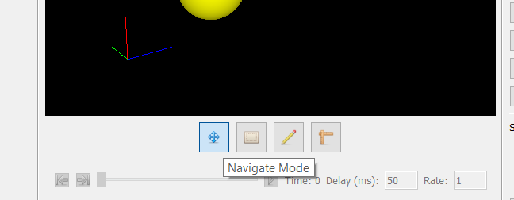
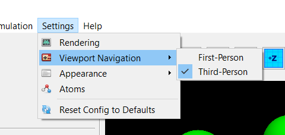
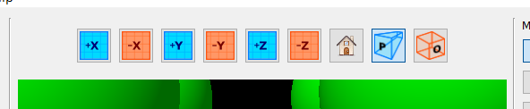
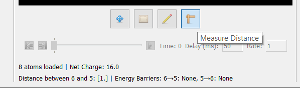

Navigation
This program includes a 3D viewer for previewing your simulation's setup, as well as viewing its results. To enter manual navigation mode, simply click the "Navigate Mode" button along the lower toolbar:

Mouse Controls
In navigation mode, the following inputs may be used to navigate the viewport:
| Input | Action |
|---|---|
| Left-Click + Drag | Pivot view |
| Middle-Click + Drag | Translate view |
| Left-Click + Control Key + Drag | Alternative option for translating view |
| Mouse Wheel | Zoom in/out |
First-Person Mode
Although a third-person perspective is the default, a first-person perspective has been
included for convenience. To toggle between first-person and third-person mode, go
to Settings > Viewport Navigation under the menu bar:

Under first-person mode, the controls are: | Input | Action | | ----- | ------ | | Move Mouse | Rotate view (must have the viewport in-focus) | | | Left-Click | Enter viewport focus | | Escape | Exit viewport focus | | W Key | Move forward | | A Key | Move left | | S Key | Move backward | | D Key | Move right | | Space Key | Move forward | | Shift Key | Move down | | Hold Control Key | Move slow while holding key | | Mouse Wheel | Increase/decrease movement speed |
View Buttons
Several buttons are available above the viewport to quickly enter a particular view:

These buttons correspond to:
| Button | Action |
|---|---|
| +X | Sets view so that x-axis points out of the screen |
| -X | Sets view so that x-axis points in to the screen |
| +Y | Sets view so that y-axis points out of the screen |
| -Y | Sets view so that y-axis points in to the screen |
| +Z | Sets view so that z-axis points out of the screen |
| -Z | Sets view so that z-axis points in to the screen |
| Home | Set to standard view |
| Perspective Projection | Switch to a perspective projection |
| Orthogonal Projection | Switch to an orthogonal projection |
Distance Tool
A distance tool is included for convenience. To activate it, simply press the "Measure Distance" button below the viewport:

Then, select the pair of atoms that you wish to measure the distance between.